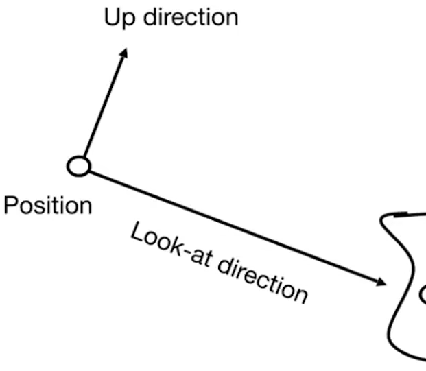
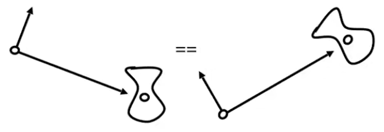
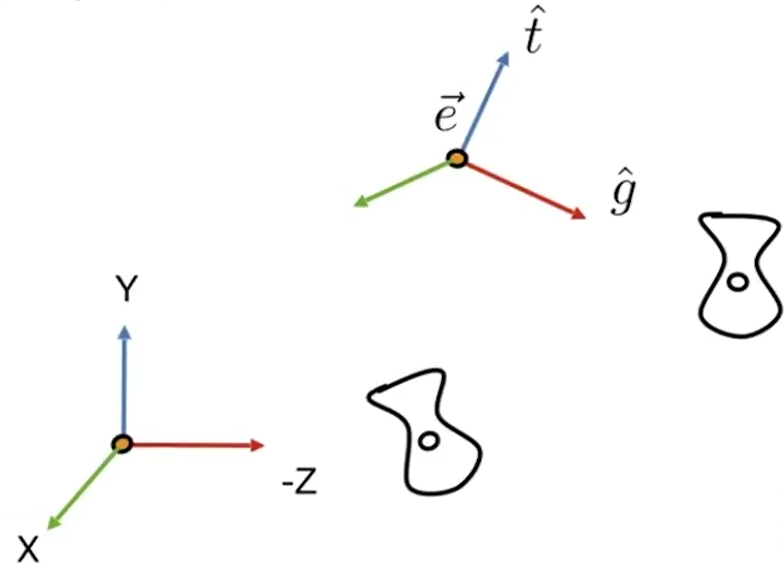
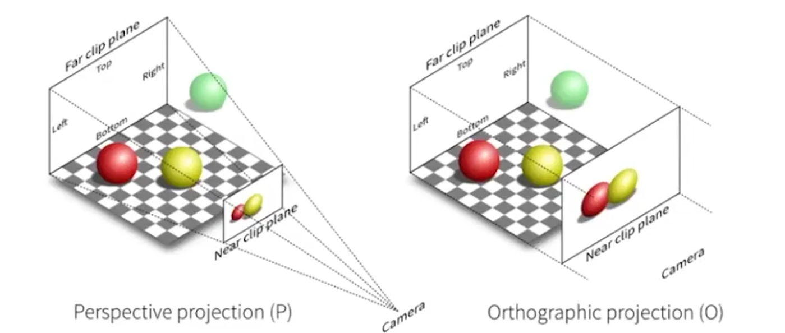
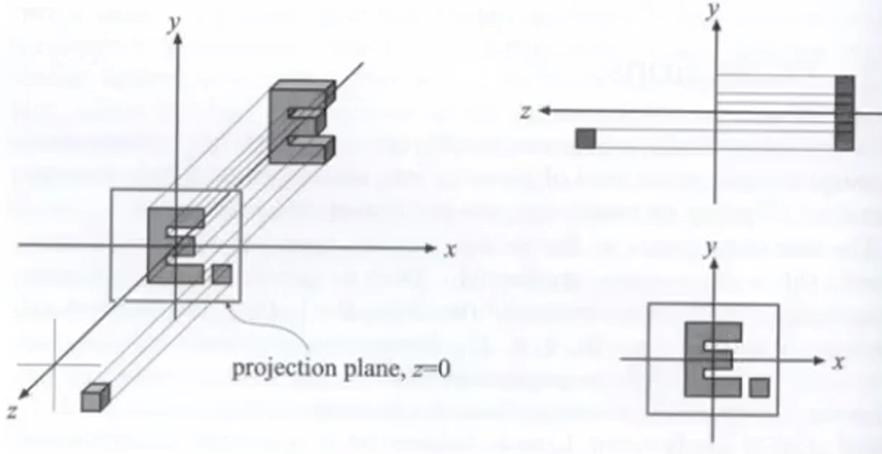
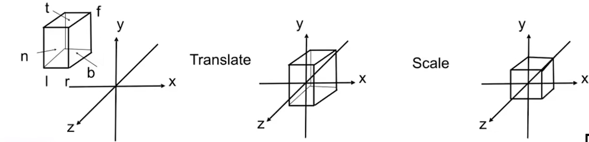
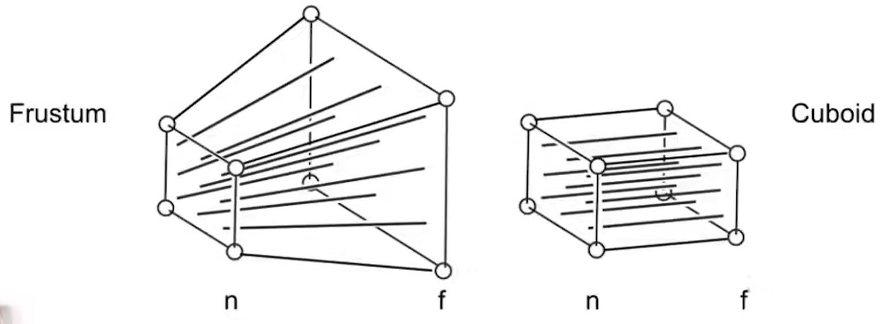
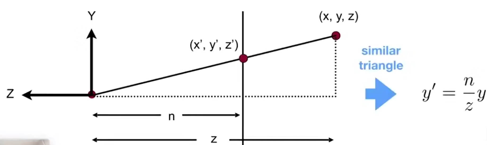
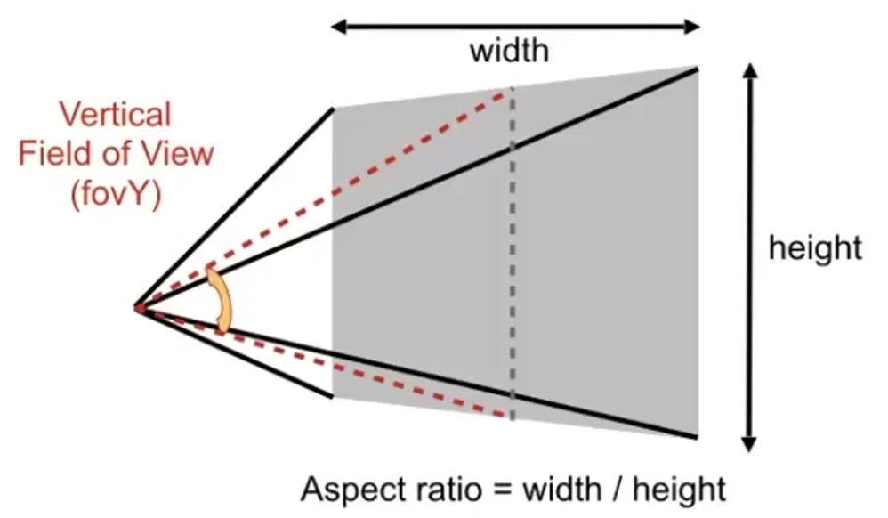
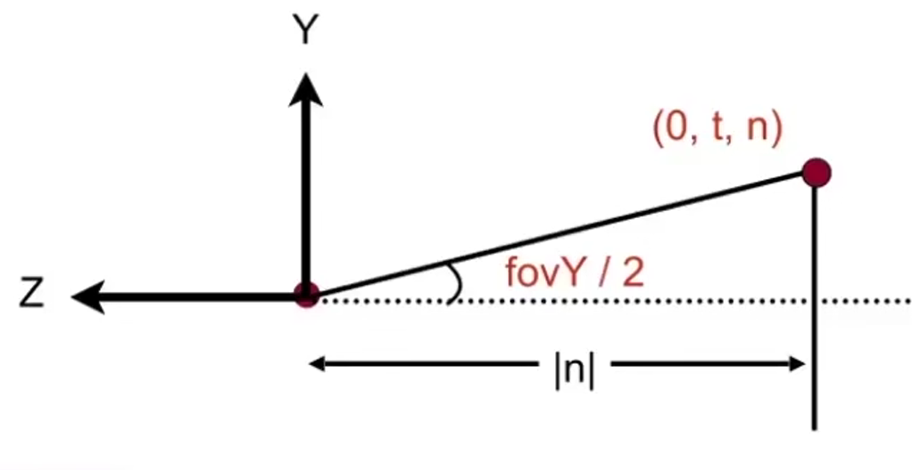

Games101 - Lecture 04 Transformation Cont
Transformation
1. 3D Moving Transformation
简单的三维变换
缩放 \[ S(s_x,s_y,s_z)= \begin{pmatrix} s_x & 0 & 0 & 0 \\ 0 & s_y & 0 & 0 \\ 0 & 0 & s_z & 0 \\ 0 & 0 & 0 & 1 \end{pmatrix} \]
平移 \[ T(t_x,t_y,t_z)= \begin{pmatrix} 1 & 0 & 0 & t_x \\ 0 & 1 & 0 & t_y \\ 0 & 0 & 1 & t_z \\ 0 & 0 & 0 & 1 \end{pmatrix} \]
简单绕轴旋转 \[ R_x(\alpha)= \begin{pmatrix} 1 & 0 & 0 & 0 \\ 0 & \cos\alpha & -\sin\alpha & 0 \\ 0 & \sin\alpha & \cos\alpha & 0 \\ 0 & 0 & 0 & 1 \end{pmatrix} \]
\[ R_y(\alpha)= \begin{pmatrix} \cos\alpha & 0 & \sin\alpha & 0 \\ 0 & 1 & 0 & 0 \\ -\sin\alpha & 0 & \cos\alpha & 0 \\ 0 & 0 & 0 & 1 \end{pmatrix} \]
\[ R_z(\alpha)= \begin{pmatrix} \cos\alpha & -\sin\alpha & 0 & 0 \\ \sin\alpha & \cos\alpha & 0 & 0 \\ 0 & 0 & 1 & 0 \\ 0 & 0 & 0 & 1 \end{pmatrix} \]
罗德里格斯旋转公式 (Rodrigues' Rotation Formula)
定义一个旋转角度 \(\alpha\) 与一条经过原点的旋转轴 \(\mathbf{n}\)，则 \[ \mathbf{R}(\mathbf{n},\alpha)= \cos(\alpha)~\mathbf{I} + (1-\cos(\alpha))~\mathbf{n}\mathbf{n}^T + \sin\alpha~ \underbrace{\begin{pmatrix} 0 & -n_z & -n_y \\ n_z & 0 & -n_x \\ -n_y & n_x & 0 \end{pmatrix} }_{\mathbf{N} } \]
2. Viewing transformation
View / Camera transformation
如何进行视图变换？
定义相机：

- 位置 \(\overrightarrow{e}\)
- 朝向 \(\hat{g}\)
- 向上的方向 \(\hat{t}\)
为了简化变换，我们可以使相机与模型的相对位置不变，固定相机位置：

移动并固定相机位置在原点
旋转并固定相机为以Y轴为向上方向
旋转并固定相机朝向-Z
同时变换除相机以外的模型

由于相机是设定好的，固定的，虚拟出来的，也就是视图变换本质上只是在对模型进行变换，因此模型变换与视图变换常被一起称为模型视图变换。
使用数学表示视图变换：
定义 \(M_{view}=R_{view}T_{view}\)，
平移到原点 $ T_{view}=
\[\begin{pmatrix} 1&0&0&-x_e\\0&1&0&-y_e\\0&0&1&-z_e \end{pmatrix}\]$
旋转 \(g\) 到 \(-Z\)，\(t\) 到 \(Y\)，\((g\times t)\) 到 \(X\)，对此我们可以求逆变换：
旋转 \(X\) 到 \((g\times t)\)，\(Y\) 到 \(t\)，\(Z\) 到 \(-g\) ，可得： \[ {R_{view} }^{-1}= \begin{bmatrix} x_{\hat{g}\times\hat{t} } & x_t & x_{-g} & 0 \\ y_{\hat{g}\times\hat{t} } & y_t & y_{-g} & 0 \\ z_{\hat{g}\times\hat{t} } & z_t & z_{-g} & 0 \\ 0 & 0 & 0 & 1 \end{bmatrix} \] 由于旋转的变换矩阵为正交矩阵，可得： \[ {R_{view}={ {(R_{view} }^{-1})} }^T=\begin{bmatrix} x_{\hat{g}\times\hat{t} } & y_{\hat{g}\times\hat{t} } & z_{\hat{g}\times\hat{t} } & 0 \\ x_t & y_t & z_t & 0 \\ x_{-g} & y_{-g} & z_{-g} & 0 \\ 0 & 0 & 0 & 1 \end{bmatrix} \]
3. Projection Transformation
什么是投影变换？
投影变换分为正交投影与透视投影，二者的区别十分明显：

正交投影
正交投影是一种假设相机处于无限远的投影方式（忽略了模型的前后关系）。
一种简单的正交投影方式：

固定相机；
丢掉 Z 轴；
将模型平移与缩放，使其全部位于 \([-1,1]^2\) 的矩形范围内。
常用的正交投影的方式：

定义一个立方体 \([l,r]\times[b,t]\times[f,n]\) 与一个标准立方体 \([-1,1]^3\)，
- 通过先平移后缩放的方式，将立方体投影到标准立方体中。
使用数学表示投影，先将立方体的中心移动到原点，再将其缩放到标准立方体内： \[ M_{ortho}= \begin{bmatrix} \frac{2}{r-l} & 0 & 0 & 0 \\ 0 & \frac{2}{t-b} & 0 & 0 \\ 0 & 0 & \frac{2}{n-f} & 0 \\ 0 & 0 & 0 & 1 \end{bmatrix} \begin{bmatrix} 1 & 0 & 0 & -\frac{l+r}{2} \\ 0 & 1 & 0 & -\frac{t+b}{2} \\ 0 & 0 & 1 & -\frac{n+f}{2} \\ 0 & 0 & 0 & 1 \end{bmatrix} \]
透视投影
透视投影可以达到近大远小的效果。
透视投影的方式：

思路：将视锥“挤压”成一个立方体，再将立方体正交投影到标准立方体中；（\(M_{persp}\rightarrow M_{ortho}\)）
对于“挤压”的过程，定义近远都平面不变，远平面中心点不变；
从侧面看：

根据相似三角形的性质，可得 \[ y'=\frac{n}{z}y \\ x'=\frac{n}{z}x \] 根据这点，可得投影变换后的坐标： \[ \begin{pmatrix} x \\ y \\ z \\ 1 \end{pmatrix} \Rightarrow \begin{pmatrix} \frac{n}{z}x \\ \frac{n}{z}y \\ ? \\ 1 \end{pmatrix} = \begin{pmatrix} nx \\ ny \\ ? \\ z \end{pmatrix} \] 再逆向求投影变换的变换矩阵，已知： \[ M^{(4\times4)}_{persp\rightarrow ortho} \begin{pmatrix} x \\ y \\ z \\1 \end{pmatrix} = \begin{pmatrix} nx \\ ny \\ ? \\ z \end{pmatrix} \] 可求得： \[ M^{(4\times4)}_{persp\rightarrow ortho}= \begin{pmatrix} n & 0 & 0 & 0 \\ 0 & n & 0 & 0 \\ ? & ? & ? & ? \\ 0 & 0 & 1 & 0 \end{pmatrix} \]
因为近平面上的点不变，设变换一个位于近平面上的点 \(\begin{pmatrix}x&y&n&1\end{pmatrix}^T\)，可得该点被“压缩”后坐标不变： \[ M^{(4\times4)}_{persp\rightarrow ortho} \begin{pmatrix} x \\ y \\ n \\ 1 \end{pmatrix} = \begin{pmatrix} n & 0 & 0 & 0 \\ 0 & n & 0 & 0 \\ ? & ? & ? & ? \\ 0 & 0 & 1 & 0 \end{pmatrix} \begin{pmatrix} x \\ y \\ n \\ 1 \end{pmatrix} \Rightarrow \begin{pmatrix} x \\ y \\ n \\ 1 \end{pmatrix} = \begin{pmatrix} nx \\ ny \\ n^2 \\ n \end{pmatrix} \] 即 \(\begin{pmatrix} C & D & A & B \end{pmatrix} \begin{pmatrix} x \\ y \\ n \\ 1 \end{pmatrix} = n^2\) , 由于 x , y 与 n 无关，因此可以确定 C = D = 0 ，但无法确认 A 与 B 的值。
由 \(\begin{pmatrix} 0 & 0 & A & B \end{pmatrix} \begin{pmatrix} x \\ y \\ n \\ 1 \end{pmatrix} = n^2\) ，可得 \(An+B=n^2\)；
又因为远平面上的中心点不变，设远平面上中心点为 \(\begin{pmatrix}0&0&f&1\end{pmatrix}^T\)，同理可得： \[ \begin{pmatrix} 0 \\ 0 \\ f \\ 1 \end{pmatrix} \Rightarrow \begin{pmatrix} 0 \\ 0 \\ f \\ 1 \end{pmatrix} = \begin{pmatrix} 0 \\ 0 \\ f^2 \\ f \end{pmatrix} \Rightarrow Af+B=f^2 \] 联立： \[ An+B=n^2\\ Af+B=f^2 \] 可解得： \[ A=n+f\\ B=-nf \]
最后可得，投影变换矩阵为： \[ \begin{pmatrix} n & 0 & 0 & 0 \\ 0 & n & 0 & 0 \\ 0 & 0 & n+f & -nf \\ 0 & 0 & 1 & 0 \end{pmatrix} \]
如何定义一个视锥？

定义视锥的长宽比（aspect）与垂直可视角度（fovY）；

如何将 aspect 与 fovY 转换成 l, r, b, t ？ \[ \tan{\frac{fovY}{2} }=\frac{t}{\lvert n \rvert} \\ aspect = \frac{r}{t} \]